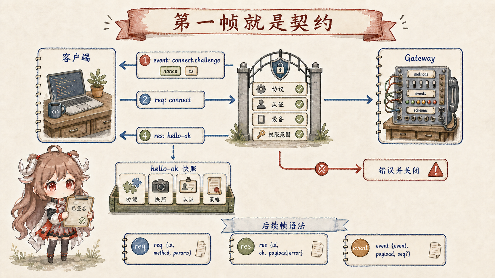
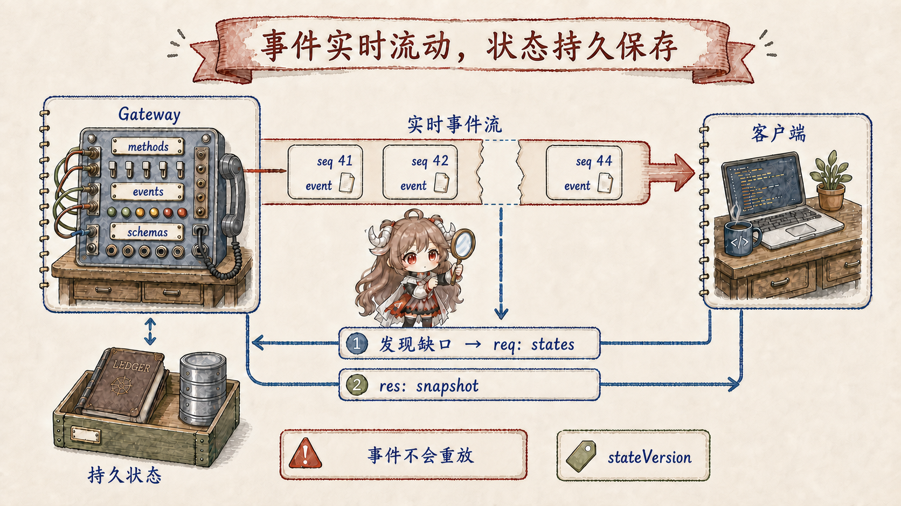

设想一个很普通的操作现场。你在 macOS 菜单栏里看到 Gateway 在线，随后用 CLI 发起一次 agent 请求；Web UI 同时显示运行中的工具事件；手机节点提供相机能力；Telegram 连接仍在收消息。它们看起来像四个产品，实际上都围绕同一份运行状态工作。
如果每个客户端都直接打开 Telegram、直接读写 session 数据库、直接启动 Agent，那么“多客户端”很快会变成“多个互相竞争的主人”：两个进程抢同一个 provider connection，配置更新只影响其中一个，手机节点把任意本地命令暴露给所有人，Web UI 断线后也不知道哪些事件已经错过。
OpenClaw 的 Gateway 正是用来消除这种多主人状态。它是一个长时间运行的进程，拥有消息 surface 的连接、方法分发、连接身份、事件 fanout 和大量运行期协调；客户端拿到的是受协议和 scope 约束的控制权，而不是对内部对象的直接引用。
阅读契约。读完后你应该能解释：为什么“共用一个 WebSocket server”还不足以成为控制平面；首帧为什么必须是 connect；hello-ok 为什么既是欢迎包也是协商结果；operator、node 与 worker 为什么不是三个 UI 名称；请求、响应和事件如何分工；以及事件断档后为什么要重新读取状态，而不是要求 Gateway 重播所有事件。
证据边界。本文沿用固定提交 c549250。协议形状以 TypeBox frame schemas 为准，连接与广播行为以 Gateway 源码为准；官方 Gateway architecture 和 Gateway protocol 用来确认产品契约。安全篇会再深入 auth、pairing、sandbox 与 elevated，这一篇只讲控制平面如何承载授权结果。
一、控制平面不是“有一个中心服务器”
一个 HTTP/WebSocket server 只说明客户端能把字节发到同一个端口。控制平面还必须回答四类问题：谁有资格连接；连接后能调用什么；一项操作改变了哪份权威状态；变化怎样通知其他观察者。只有这四个答案都集中在同一个 owner，客户端才不会各自维护半真半假的副本。
官方架构给出一个强约束：一台 host 上运行一个长寿命 Gateway，它是唯一打开 WhatsApp/Baileys session 的位置，并维护其他消息 provider 连接。控制客户端和 nodes 都通过同一 WS server 进入，但声明不同 role 与能力。也就是说，Gateway 的中心性首先来自资源所有权，其次才是网络拓扑。
| 表面 | Gateway 拥有什么 | 客户端拥有什么 |
|---|---|---|
| 消息渠道 | provider connection、入站接纳、出站发送与状态。 | 发出受约束的发送/运行请求，观察结果。 |
| Agent 运行 | run 注册、session 归属、事件 fanout、等待与终态。 | 用 idempotency key 发起任务，用 runId 关联事件。 |
| 配置与运营 | 当前运行配置、reload/restart 计划、持久写入与审计。 | 根据 scope 读取或提交有冲突保护的变更。 |
| 设备节点 | pairing、device identity、连接状态和命令路由。 | 声明 caps/commands/permissions，执行获准命令。 |
二、operator 和 node 共用传输，不共用权限模型
图左边的 operator 包括 CLI、Web UI 与 macOS app。它们主要调用 Gateway 方法、读取状态、发起 Agent 运行和处理审批。node 则是 iOS、Android、macOS 或 headless 设备端执行面，它向 Gateway 声明能提供哪些命令，例如相机、屏幕录制、位置或 canvas。
两者都用 WebSocket，并不意味着 node 可以调用任意 operator RPC，也不意味着 operator 可以绕过 node pairing 直接执行设备能力。角色是连接协商的一部分，scope 是方法级授权输入，caps/commands/permissions 则描述 node 公开的能力面。传输复用降低协议数量，role separation 保留信任边界。
源码还有更窄的 worker role。官方协议把它描述为闭合 allowlist：通过 Gateway 所有的 loopback/SSH ingress，只允许 worker heartbeat、transcript commit、live event 与 inference start/cancel 等有限 RPC，不进入通用 operator、node 或 plugin 分发。它说明一个成熟控制平面可以共用入口基础设施，同时对不同身份建立完全不同的协议宇宙。
三、第一帧必须是 connect：先建立连接身份，再接受命令

WebSocket upgrade 成功只表示 TCP/HTTP 层建立了双向通道。Gateway 还没有理由相信对方是谁。连接建立后，server 先发送 event: connect.challenge，其中的 nonce 与 timestamp 进入设备签名；客户端必须把普通 request frame 的 method 设为 connect，并携带 protocol range、client metadata、role、scopes、auth 和 device proof。
message handler 的 pre-auth 分支 明确验证：第一帧必须先满足 request frame schema，再满足 method === "connect"，最后通过 connect params schema。普通 health 请求即使结构正确，也不能抢在身份协商之前。
if (!client) {
const isRequestFrame = validateRequestFrame(parsed);
if (!isRequestFrame || parsed.method !== "connect" || !validateConnectParams(parsed.params)) {
setHandshakeState("failed");
// respond with a structured error, then close
}
}这个顺序避免了一类危险设计：先让未认证连接进入通用 method router，再要求每个 handler 自己记得做 auth。OpenClaw 把“是否已经成为 client”作为 dispatcher 之前的硬门槛；方法 scope 仍会做第二层授权，但它面对的是已协商身份，而不是匿名 socket。
四、hello-ok 是一次连接级快照与能力协商
握手成功后，sendGatewayHello 组装 hello-ok。它不只回一句“连接成功”，而是给客户端一份开始正确工作的基线：
server提供 version 和连接级connId；features列出公开 methods、events 与 capabilities；snapshot带回 presence、health 与相应 stateVersion；auth回显最终 role/scopes，并可能签发 device token；policy公布 frame、buffer、tick 和附件大小等连接期限制。
policy 不是静态 SDK 常量。例如附件上限受 Gateway 当前配置影响，客户端应该每次重连重新读取，而不是把 20 MB 写死。features 也不是把进程里所有 helper 自动导出；它是有意公开的协议面。控制平面的可发现性必须和授权、版本、启动可用性一致。
同样，snapshot 是“连接完成这一刻”的起点，不是永久真相。后续变化通过 events 到达；客户端发现间断或重连时，再用读取 RPC 获取新的权威状态。
五、方法描述表把调用、scope 与写策略绑在一起
一个常见实现会维护三张容易漂移的表：路由器知道 handler，权限模块知道 scope，文档生成器知道可公开方法。OpenClaw 把核心方法的 name、family、scope、since、startup availability 与 control-plane write 标记集中在 CORE_GATEWAY_METHOD_SPECS。
const CORE_GATEWAY_METHOD_SPECS = [
["health", "health", "operator.read", "<=2026.7"],
["status", "health", "operator.read", "<=2026.7"],
["config.get", "config", "operator.read", "<=2026.7"],
["config.patch", "config", "operator.admin", "<=2026.7", { controlPlaneWrite: true }],
// ...
] as const;注册表创建时会验证每个 core handler 都有 descriptor，避免一个新 handler 因漏填 scope 而绕过统一授权。plugin methods 也会转成 scoped descriptors；旧式只有 handler 的 plugin registry 被保守地默认到 admin，而不是默认公开。这是一条重要的兼容性原则：对老扩展保持可调用，不等于把未知权限降到最低门槛。
六、req、res、event 是三种不同关系
握手以后，wire protocol 只有三种顶层 frame。schema 用 type discriminator 区分它们：
| Frame | 关联方式 | 语义 |
|---|---|---|
req | id + method | 客户端要求 Gateway 执行或读取一项操作。 |
res | 复用请求 id | 该 RPC 被接受/拒绝或返回 payload；错误是结构化 code/details。 |
event | event + 可选 seq/stateVersion | server 主动发布状态变化或运行进度，不属于某个等待中的 request response。 |
这里还要避免把“RPC 响应”与“任务完成”混为一谈。agent 方法可以先返回 accepted 与 runId，让调用方知道请求已经进入运行系统；assistant/tool/lifecycle 进度随后走 agent events。若客户端需要等待终态，再调用相应 wait 方法或根据 lifecycle 协议跟踪，而不是让一个 RPC socket handler 持有整个长任务。
这种拆分让请求超时、WebSocket 断线与 Agent 是否继续运行成为三个可独立处理的问题。HTTP handler 或 CLI 退出不应该自动取消已经被 Gateway 接纳的 root work。
七、广播不是 socket.send 循环：每个接收者都要重新过边界
Gateway 知道一个事件，并不代表所有连接都能看到它。EVENT_SCOPE_GUARDS 为 agent、chat、cron、approval、pairing、terminal 等事件声明 scope。broadcast 还会按 role、session subscription、target connIds 和 agent/session visibility 过滤。
这很关键，因为事件内容往往比方法返回更容易被忽略授权。一个只有 pairing scope 的客户端可以参与设备配对，不代表它能被动收听 chat transcript；node role 也不应该收到 operator 的 session 广播。授权必须同时覆盖“主动读取”和“被动推送”。
广播器还为每个 client 维护独立 seq。这是因为过滤后，不同客户端实际收到的事件集合不同；用一个全局序号会让权限过滤看起来像丢包。targeted event 则可以不带常规广播 seq。序号属于具体接收关系，而不是业务事件的宇宙编号。
八、事件是实时通知，不是持久日志

官方架构明确写着：events are not replayed，客户端遇到 gap 必须 refresh。图里 seq 43 缺失后，客户端用真实的读取方法 status 示意重新获取快照；具体事件域也可能需要 health、config.get 或 session 查询。重点不是某个万能 state API，而是恢复方式：事件告诉你“变了”，读取 RPC 告诉你“现在是什么”。
stateVersion 让客户端比较 presence/health 等有版本状态，但它仍不是通用 event store offset。若需要完全审计或恢复 Agent transcript，应该读取相应持久 owner，而不是依赖 WS 事件缓存。控制平面把 live observation 与 durable truth 分开，反而使断线语义更清楚。
九、慢消费者会被丢事件或断开，不能拖住 Gateway
WebSocket 的危险不只在握手，也在发送缓冲。某个后台 tab 停止读取时，继续无限排队会让一个客户端耗尽 Gateway 内存。broadcast loop 检查每个 socket 的 bufferedAmount：低价值、标记 dropIfSlow 的事件可以跳过；否则关闭 slow consumer。
值得注意的是，被 drop 的普通广播仍推进该 client 的 seq。这样客户端能发现 gap 并刷新，而不是误以为自己拥有连续事实。背压策略、序号协议和状态刷新三者是成套设计；只做其中一个，会把资源保护变成静默数据损失。
十、同一端口上的 HTTP surface 不自动等于同一权限
Gateway HTTP server 还承载 Control UI、canvas/A2UI、webhooks、OpenAI-compatible endpoints 和其他插件 surface。它们与 WS 共用进程乃至端口，是为了共享 owner 与配置，不代表所有 HTTP route 都能绕过认证。源码为不同 surface 分别解析 auth、origin、host、plugin descriptor 与内容安全策略。
这一点也解释了 Gateway scoped AGENTS.md 的性能约束：仅为了回答静态 plugin descriptor，不应 materialize 整个 bundled plugin runtime。控制平面会频繁处理连接、探针和 UI 资源；如果每个轻量请求都拉起庞大能力注册表，它会把“集中所有权”变成“集中冷启动”。owner 集中，不等于所有依赖都必须 eager load。
十一、失败边界：连接失败、RPC 失败、运行失败不是一回事
- 握手失败：protocol/auth/device/scopes 无法协商，连接收到结构化错误后关闭，通用 handler 不应被调用。
- RPC 授权或校验失败：连接仍可能有效；响应以
FORBIDDEN、MISSING_SCOPE或参数错误结束。 - 启动期不可用：Gateway sidecars 尚未完成时可返回 retryable
UNAVAILABLE与retryAfterMs，客户端应在连接预算内重试。 - Agent 运行失败：最初的
agentRPC 可能已经 accepted；终态通过运行协议观察，而非倒推握手或 socket 状态。 - 慢消费者：某一连接被 drop/close，不等于 Gateway 的持久状态回滚。
- Gateway 重启：live events 消失；客户端重连、重新握手并读取 snapshot，运行恢复由第八篇的 durable ownership 处理。
把这些失败压成“Gateway offline”会导致糟糕的自动恢复：认证错误被无限重试，accepted run 因客户端超时而重复提交，断线后又拿旧 UI state 继续写。正确恢复必须先识别失败属于连接、RPC、运行还是状态投影。
十二、从 Gateway 带走六条控制平面规则
- 中心化的是所有权，不只是端口。权威 provider connections、state mutation 和 run admission 必须有唯一 owner。
- 连接身份先于方法分发。首帧握手建立 role、scopes、device 与协议版本，handler 再做方法级授权。
- 能力发现与授权表共源。methods、scope、startup 和 write policy 不应维护成互相漂移的列表。
- RPC 接受与异步完成分开。用 request id 关联响应，用 runId/event 关联长任务。
- 事件是提示，持久 owner 才是真相。发现 gap 就 refresh，而不是假设 live stream 是 event store。
- 背压必须可观察。drop 推进 seq、slow close 有原因，客户端才能把资源保护转化成状态恢复。
下一篇会沿 Gateway 已经确定的 route 继续向内：binding、peer、thread 如何组成 sessionKey，队列怎样决定消息加入当前 run 还是成为下一轮，session entry 与 transcript 又为什么不能由渠道插件随意改写。
参考源码与文档
- frames.ts：connect、hello-ok、req/res/event 的权威 schema。
- message-handler.ts：pre-auth 首帧、connect 校验和 authenticated dispatcher 接缝。
- connect-hello.ts：hello-ok snapshot、features、auth 与 policy。
- core-descriptors.ts：核心方法、scope、版本与写策略。
- server-broadcast.ts：event scope、session filter、per-client seq 与 backpressure。
- Gateway architecture 与 Gateway protocol：官方架构与 wire contract。